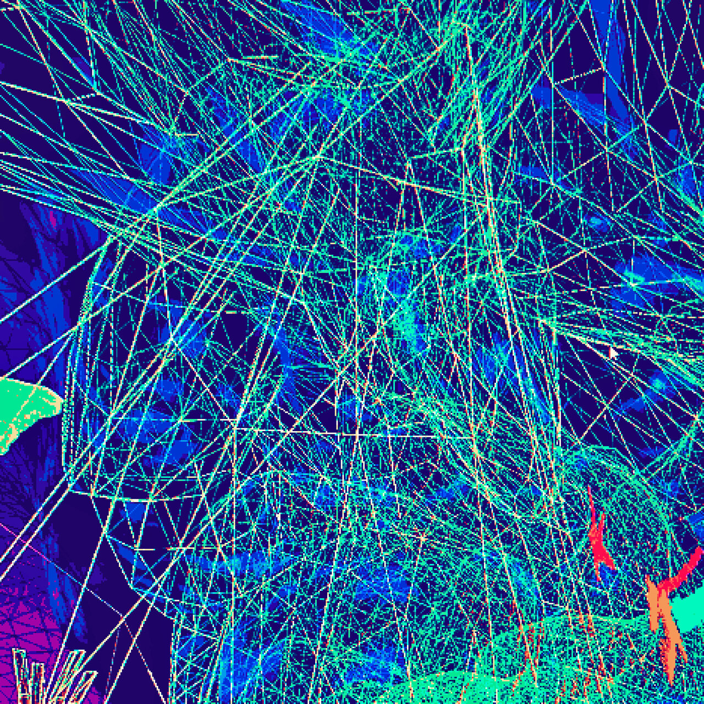
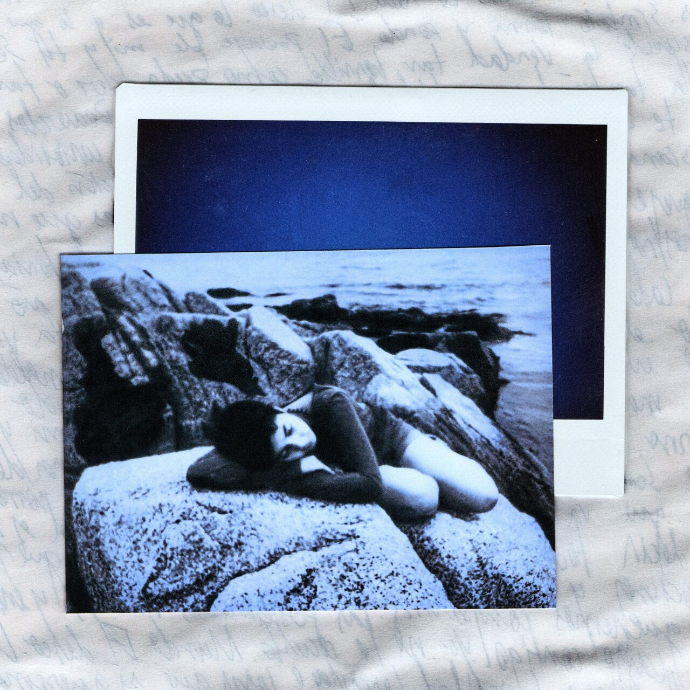
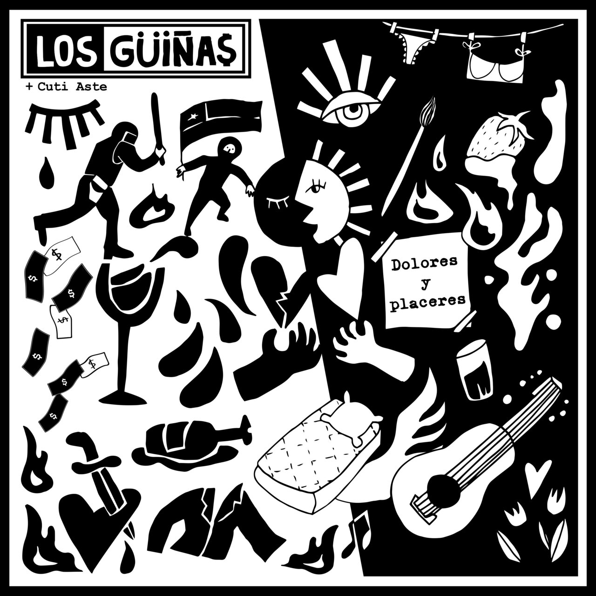

puntomedio - Sin destino
Primer Long Play de la banda "puntomedio", con sonidos melancólicos provenientes de fusión Jazz/Rap
Amanitas - Todo Es Circular
El regreso de "Amanitas" con su nuevo EP, con un sonido renovado, pero con la misma energía

kurisou - atardeceres en mundos alienígenas
Álbum debut del compositor "kurisou", con sonidos ambient y samples que se mezclan en tu cabeza

Alfilera - Detrás de las Palabras
Es el primer LP que lanza "Alfilera", con una mirada instrospectiva y vulnerable transmite con su voz variados sentimientos

Los Güiñas - Dolores y Placeres
"Los Güiñas" llegan con su primer Extended Play para mostrarnos las 2 caras de una misma moneda con sus guitarras llenas de overdrive y letras potentes